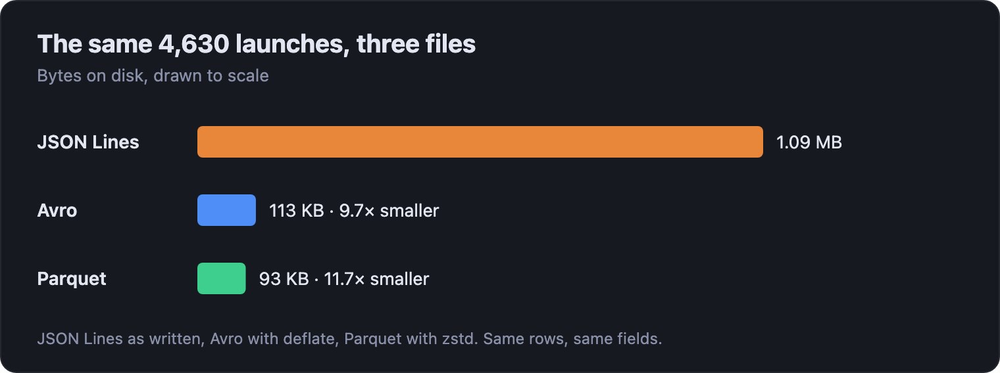
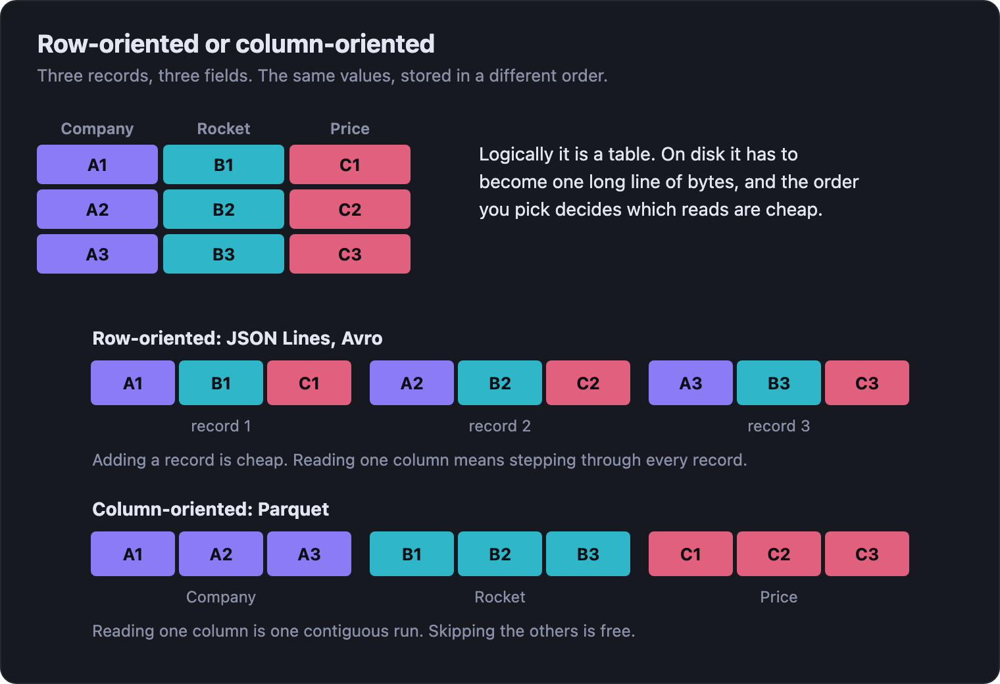
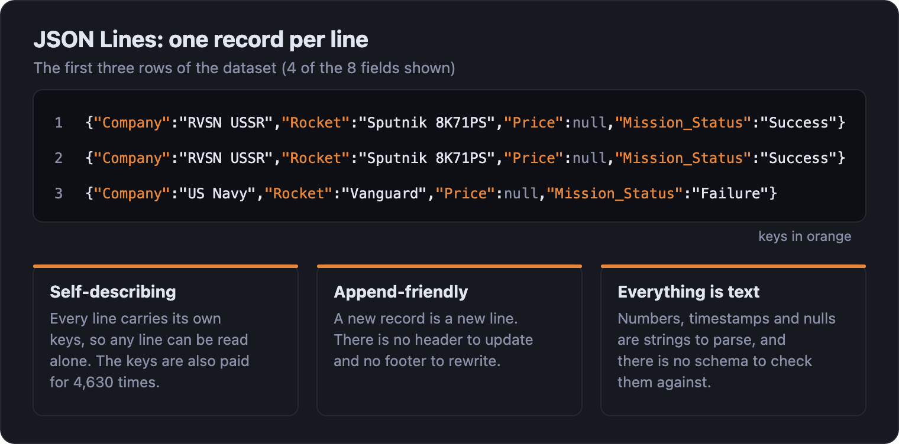
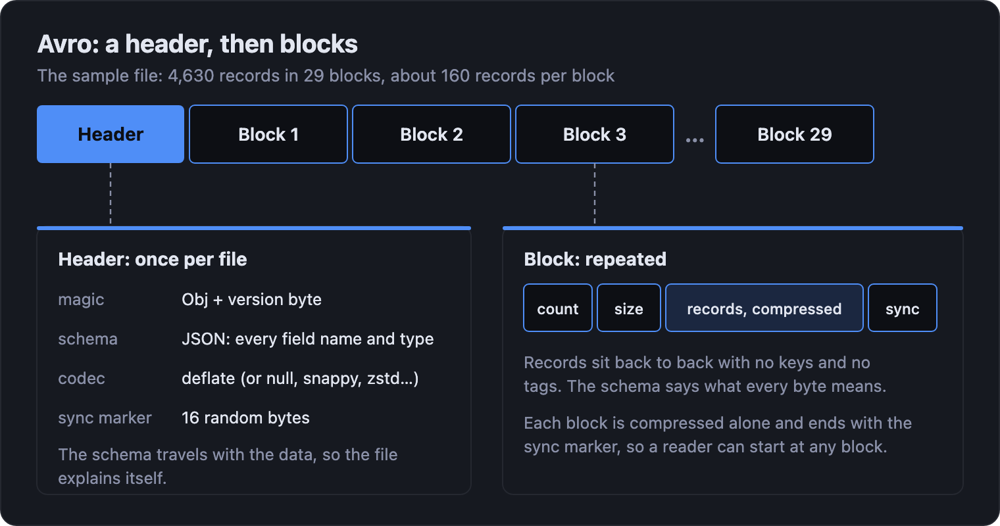
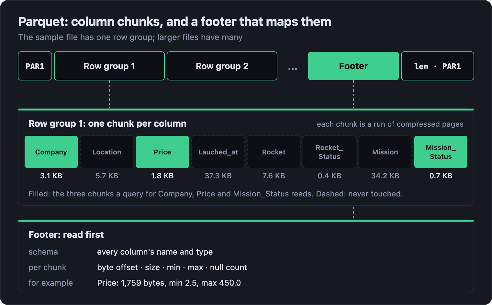
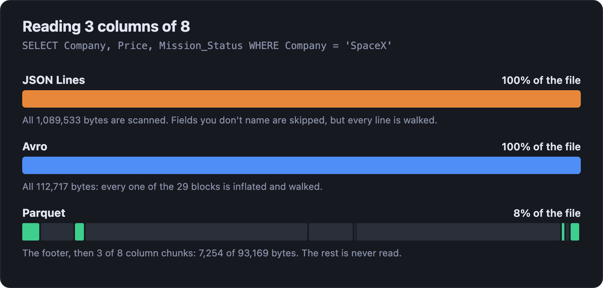
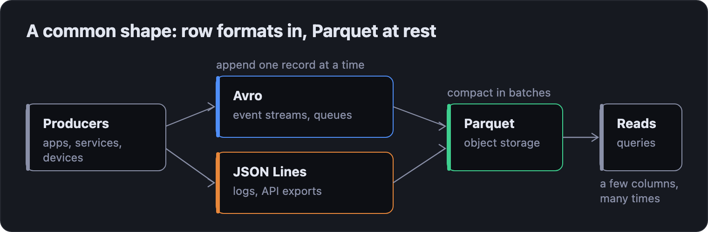

Avro vs Parquet vs JSON Lines: one dataset, three very different files
Correct at time of publishing. For up-to-date performance and feature information, see rugo.dev.
The same 4,630 rows take 1.09 MB as JSON Lines, 113 KB as Avro and 93 KB as Parquet. Size is the least interesting difference. What matters is how much of each file a reader can skip, and that decides where each format belongs.
Ask which format to use and you'll get a one-line answer: Parquet for analytics, Avro for streaming, JSON Lines for logs. All three are true, and none of them helps until you know why. The reasons are in the bytes, so we'll open the same dataset in all three formats and look.
The data is 4,630 orbital launch attempts, from Sputnik onwards: company, rocket, price, launch time, outcome. It's small enough to inspect by eye, and every file here is in the rugo.dev repository if you want to follow along.

The one idea: rows or columns
A table is two-dimensional. A file is one long run of bytes. Every format has to pick an order for the cells, and there are only two sensible choices: write one whole record after another, or write one whole column after another.

JSON Lines and Avro are row-oriented. Parquet is column-oriented. Nearly everything else in this post follows from that choice, and from what each format adds to make its choice workable.
JSON Lines: one record per line
JSON Lines (also called NDJSON) is as simple as a format gets: one JSON object per line, separated by newlines.

Its strengths come from that simplicity. Any language can
write it. You can open it in a text editor, search it with
grep, and add to it with nothing more than a
file write. A half-written file is still a valid file up to its
last complete line. There's nothing to install and nothing
to configure, which is why it's the default for logs and
API exports.
The costs come from the same place. Every line repeats
every key, so the field names are written 4,630 times.
Numbers and timestamps are text that has to be parsed on
every read. There is no schema, so the type of
Price is whatever the first rows suggest, and
a reader has to find the start of each record by scanning
for newlines. To get at one field you scan the whole file.
Avro: a header, then blocks
Avro keeps the row orientation and makes everything about it explicit. The file opens with a header holding the schema as JSON, then holds the records in blocks.

The schema is the point of Avro. It travels with the data, so the file explains itself. It supports rich types: timestamps, decimals, enums, nested records, arrays and maps. Records are packed back to back with no keys and each block is compressed, so this file comes out nine times smaller than the JSON Lines one. And because readers and writers each declare a schema, they can differ: add a field with a default value and old files still read, which is why Avro is so common between services that are deployed on different days.
Blocks are the other half. Each one is compressed on its own and ends with the sync marker, so a reader can drop in at any block boundary. That makes an Avro file splittable across workers, and cheap to append to: you add another block.
What Avro doesn't keep is anything about the contents. A block records how many records it holds and how many bytes long it is, and nothing else. There are no per-column statistics to tell a reader a block can't match, so a read inflates every block and walks every record, skipping over the fields it doesn't want.
Parquet: column chunks and a footer
Parquet turns the layout on its side. Rows are grouped into row groups, and inside each row group every column is stored as its own contiguous chunk. The file ends with a footer that says where everything is.

Two things fall out of that. The first is compression. Put a thousand company names next to each other and they compress far better than the same names scattered between prices and timestamps, and a column of repeated values shrinks further still through dictionary encoding. Each column gets the encoding that suits it. That's how this file ends up the smallest of the three.
The second is skipping. The footer records the minimum and maximum of every column chunk, plus a null count. A reader that wants launches priced under $60M can skip any row group whose cheapest launch already costs more, without opening it. A reader that wants three columns of eight opens three chunks. Skipping is built into the layout.
The price is that Parquet files are written, not appended to. The footer is written last and the file can't be read without it, so a half-written Parquet file is unreadable and adding a record means writing a new file. Writers buffer a whole row group in memory before they emit it. Parquet suits data you write in batches and read many times.
What a read actually touches
Here's the same question asked of all three files: the company, price and outcome of every SpaceX launch. It needs three of the eight columns.

JSON Lines and Avro have to go through the whole file. Parquet reads 7,254 bytes of 93,169, because the footer points straight at the three chunks that matter. On a file this size nobody would notice. On a 2 GB file with 110 columns, reading a handful of them is a very different job in each format.
Compression doesn't change the picture for JSON Lines. Gzip takes this file to 81 KB, but a reader still has to inflate all of it to reach any one field.
Side by side
| JSON Lines | Avro | Parquet | |
|---|---|---|---|
| Layout | Rows, as text | Rows, in binary blocks | Columns, in binary chunks |
| Schema | None | In the header | In the footer |
| Types | Strings, numbers, booleans, null, nested | Timestamps, decimals, enums, nested | Timestamps, decimals, nested, lists |
| Add a record | Append a line | Append a block | Write a new file |
| Read a few columns | Scan every line | Inflate every block | Read just those chunks |
| Skip rows | No | No | Yes, by min/max |
| Open in a text editor | Yes | No | No |
| Best at | Logs, API exports, anything a person reads | Event streams, records passed between services | Analytics, data lakes |
Which one should you use?
Ask how the data will be written, then how it will be read.
- Records arrive one at a time, and people need to look at them: JSON Lines. Logs are the classic case. The format costs you in size and read speed, and gives you grep.
- Records move between systems, and the shape will change: Avro. A schema that travels with the data and evolves safely is worth more than a smaller file.
- Data is written in batches and read many times, a few columns at a time: Parquet. Each read pays only for what it uses.
The mistake is treating this as one decision for the whole pipeline. Most pipelines use two of the three, because writing and reading want opposite things.

A row format at the edge takes records as they happen. A batch job compacts them into Parquet. Everything downstream reads Parquet. The formats don't compete; they hand off to each other.
Where rugo fits
That hand-off is where Python code spends its life, and it's
why rugo reads all three formats
through one API. You pass a path or bytes, name the
columns you want and, where the format allows
it, the predicates to filter by. What comes
back is the same columnar batch whichever format it came
from.
from rugo import avro, jsonl, parquet want = ["Company", "Price", "Mission_Status"] spacex = [("Company", "==", "SpaceX")] # Parquet: unwanted chunks and row groups are never read with parquet.read_parquet("space_missions.parquet", columns=want, predicates=spacex) as reader: print(sum(m.num_rows for m in reader)) # JSON Lines: unwanted fields are never turned into values with jsonl.read_jsonl( "space_missions.jsonl", columns=want, predicates=spacex, explicit_schema={"Price": "FLOAT64"}, ) as reader: print(sum(m.num_rows for m in reader)) # Avro: same columns; Avro has no statistics, so filter the values with avro.read_avro("space_missions.avro", columns=want) as reader: print(sum(c == "SpaceX" for m in reader for c in m.column("Company").to_pylist()))
All three print 182. Moving data along the pipeline in the previous section is a read and a write, because every reader and writer shares the same batch:
with jsonl.read_jsonl("events.jsonl") as reader: with open("events.parquet", "wb") as f: with parquet.open_parquet_writer(f.write) as writer: for morsel in reader: writer.write_row_group(morsel)
rugo is built on the idea at the centre of this post: the fastest bytes are the ones you never read. That's why its numbers look the way they do:
- JSON Lines: on a 2.0 GB file of a million rows and 110 columns, rugo is 16× faster than PyArrow reading one column, and 23× faster with a filter that lets about 10% of rows through.
-
Avro: 7.8× faster than
fastavro and 50× faster than Apache's
own
avropackage reading every field of 200,000 rows. Called from Python, it also beat Apache Arrow's Rust Avro reader in three of four races. - Parquet: cold-starts 1.5–2.2× faster than PyArrow, DuckDB or Polars, from an install of about 8 MB with no PyArrow, pandas or NumPy underneath it.
The home page has the measurements behind each figure, with versions and hardware.
Try it
pip install rugo is the whole install. Each
format has a notebook that runs in your browser on the same
4,630 launches used here:
Parquet,
Avro
and
JSON Lines.
Reproducing this
File sizes are the bytes on disk of
space_missions.jsonl,
.avro (deflate) and .parquet
(zstd) in
docs/data. The Avro file stores the rocket as a nested record; the
JSON Lines and Parquet files flatten it, and all three hold
the same 4,630 launches. The Parquet byte counts in the
reading diagram are each column chunk's compressed size and
the footer size from the file's own metadata, and the Avro
block count is from its block headers. The 182 comes from
running the code above with rugo 0.5.4.
The diagrams are generated by
tools/build_format_diagrams.py, which reads the file sizes from the data files directly.